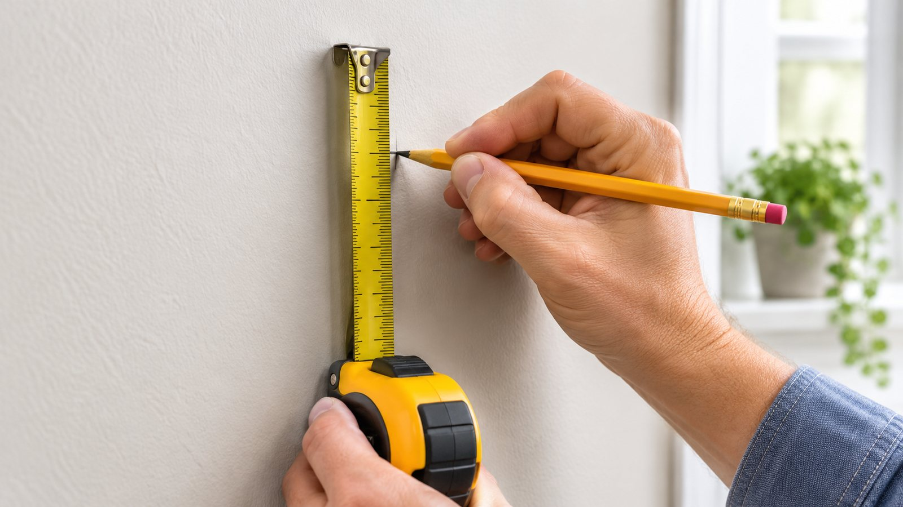
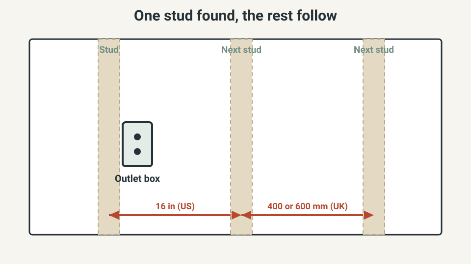
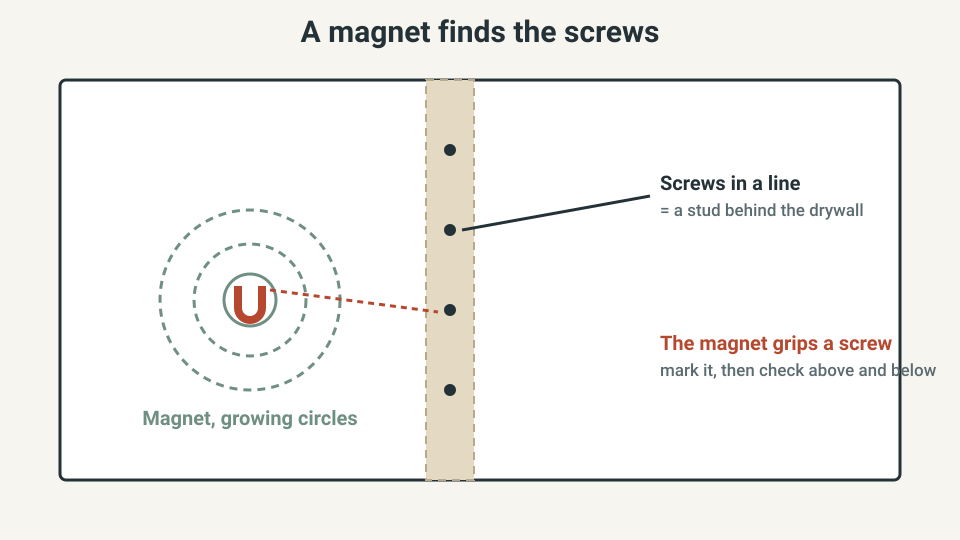
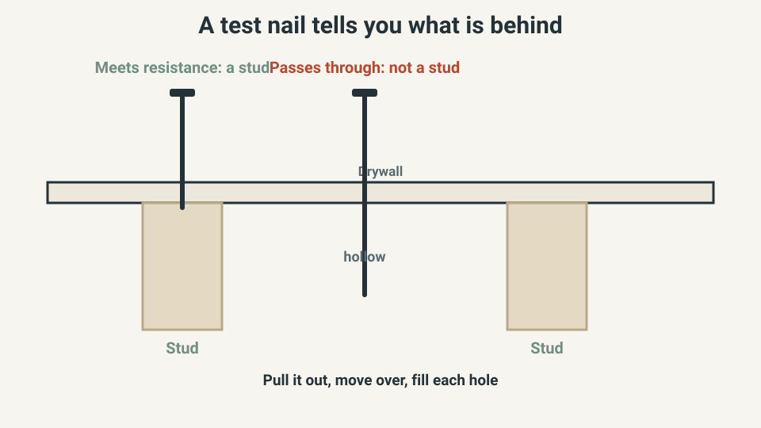

WEEKEND PROJECTS · WALL HANGING
How to Find a Wall Stud Without a Stud Finder

A heavy shelf, TV or mirror held by drywall alone will not stay up. A stud will hold it. You can find one without a stud finder, using things you already have: a tape measure, a magnet, a flashlight and a finish nail. This guide shows six methods, how to confirm what you found, and how US and UK walls differ. For what to hang once you have it, see our heavy mirror guide. I am not a contractor.
The quick answer
Find one stud from an outlet, a magnet or the trim, then measure along the wall and confirm each stud with a test nail.
- Start from a clue: an outlet or switch, a nail or screw a magnet finds, a nail hole in the trim, or a flashlight beam along the wall.
- Measure along the wall at the usual spacing: 16 inches in the US, 400 or 600 mm in the UK.
- Confirm with a test nail in a spot you can hide. Resistance means a stud.
- Use two clues before you drill for anything heavy.
Quick plan
| Item | Detail |
|---|---|
| Time | About 10 to 15 minutes. That is my estimate, not a sourced figure |
| Cost | Free with a tape measure, a flashlight, a magnet and a finish nail. This Old House also lists a screwdriver and caulk to hide nail holes |
| Best for | Anyone about to hang something heavy and unsure where the studs are |
| Goal | Find and mark one stud, then confirm the rest |
What a stud is and how far apart they are
This Old House describes studs as the vertical framing members inside walls, hidden behind the drywall and running floor to ceiling. They are 1.5 by 3.5 inches (2x4) or 1.5 by 5.5 inches (2x6), made of wood or metal. It says they are spaced 16 to 24 inches apart, measured from the centre of one stud to the centre of the next. Its general contractor Tom Silva says 16 inches is typical in older homes and 24 inches in some newer construction. A corner always has a stud.
| Where | Typical spacing | What the source says |
|---|---|---|
| US | 16 inches, sometimes 24 | This Old House: 16 to 24 inches, centre to centre |
| UK, 12.5 mm plasterboard | No more than 600 mm | DIY Doctor, about building a stud wall |
| UK, 9.5 mm plasterboard | No more than 400 mm | DIY Doctor; the board is usually 1.22 m wide and joins at the middle of a stud |
Those are building rules for new walls. Old and altered walls can differ, so treat spacing as a guide for where to look, not proof.
Start with an outlet or switch

This Old House says outlets and light switches are almost always nailed to the side of a stud. Turn the power off at the breaker, remove the cover plate with a screwdriver, and look in the gap between the drywall and the electrical box to see the stud on one side. Then measure out every 16 inches to find the next ones.
If you cannot see the stud, it suggests sliding a finish nail between the drywall and the box, with the power off, angling it to the side and pushing. If it keeps going, try the other side.
UK note. DIY Doctor says special plasterboard switch and socket boxes clip to the board and do not need to be fixed to a stud or noggin. So an outlet is a clue, not a guarantee. Check with a second method.
Find the screws with a magnet or a flashlight

Magnet. This Old House says drywall installers fasten drywall to the studs with nails or screws. Place a strong rare earth magnet on the wall and move it in circles, making bigger ones each pass, until it grips a fastener. A level or tape measure with a strong magnet built in also works. A row of fasteners in a line is a stud.
Flashlight. This Old House says to turn off the room light, hold a flashlight flat against the wall, and put your cheek against the wall to look along it. Nail heads are a giveaway for studs, dips show the space between studs, and a bump shows the rough position of a stud. Mark what you find with painter's tape.
Read the trim and the corner
This Old House says carpenters nail baseboard and crown moulding into studs. Look for nail holes in the trim, or where two boards overlap. Then lightly drive a finish nail into the wall just above the baseboard, or just below the crown moulding. If you feel resistance there is a stud. Measure out 16 inches and repeat. Hide the holes with a dab of caulk.
It also says to start at a corner, where there is always a stud, and measure 16, 32 and 48 inches: you should hit a stud at each point. This works best when the spacing is regular.
Listen: the knock test and the razor trick
This Old House says to knock with your knuckles and move side to side. A hollow, low sound means you are between studs, and the pitch rises as you near one. It is not foolproof, and it works less well with insulation such as spray foam; then you may need to knock harder and judge by feel.
It also describes a fun but less practical trick: switch on an electric razor (use the handle, not the blades), an electric toothbrush or hair clippers, and drag it along the wall. The buzz rises in pitch near a stud.
Confirm it with a test nail

- Pick a hidden spot, such as just above the baseboard, as This Old House suggests.
- Push a thin finish nail in at your mark. This Old House says resistance means a stud is behind.
- If it passes through, pull it out and try a little to the side, then use the spacing to check the next mark.
- Fill each hole. This Old House uses a dab of caulk. For bigger holes, see how to patch a large hole in drywall.
Find the middle of the stud
A stud is only 1.5 inches wide on the face, according to This Old House, so the centre matters. My method, not from the sources: find the two edges with a thin nail, then take the middle. For UK studs cut from 75 by 50 or 100 by 50 mm timber, as DIY Doctor lists, the face is about 50 mm wide, which is my reading of those sizes. Drive your fixing into that middle line.
Plaster, lath and UK stud walls
- Old plaster and lath. This Old House says even sophisticated electronic stud finders cannot tell studs from the wood lath. Look for nail heads in the baseboard, because carpenters nail trim into studs. It says knocking can work well on these walls.
- Metal studs. This Old House says studs may be wood or metal, and its methods describe wood.
- UK stud walls. DIY Doctor lists 100 by 50 mm or 75 by 50 mm timber, with horizontal noggins between the studs. Plasterboard is screwed to the studs and noggins at no more than 400 mm centres in both directions, so a screw line is a good clue.
- Solid walls. Brick or concrete has no studs. That is my note.
Safety: wires and pipes
- Turn the power off before you remove an outlet or switch cover plate or slide a nail beside the box, as This Old House says.
- Test nails are small. For bigger holes, stay away from outlet lines. Cables and pipes can run in walls. This is my caution, not a sourced rule.
- For anything very heavy, use an electronic detector as well, or ask a professional. That is my advice.
When you cannot find a stud
If no stud is where you need it, use anchors rated for the weight and the wall, and put a second fixing in a stud if you can. Our drywall anchor guide has the numbers, and our heavy mirror guide shows two-fixing hanging. For lighter pieces, see hanging large wall art.
Common mistakes
- Trusting one clue. Use two.
- Measuring from the edge of a stud instead of the centre. Spacing is centre to centre, per This Old House.
- Assuming an outlet means a stud on a UK plasterboard wall.
- Skipping the test nail.
- Leaving holes open. A dab of caulk hides them.
Frequently asked questions
Is knocking on the wall enough to find a stud?
Not on its own. This Old House calls the knock test viable but not foolproof, and says it works less well when the wall is full of insulation such as spray foam. Use it to narrow the search, then confirm with a test nail.
How far apart are studs?
This Old House says 16 to 24 inches, measured from the centre of one stud to the centre of the next, with 16 inches the usual figure in older homes and some newer construction at 24. In the UK, DIY Doctor says studs are no further apart than 400 mm with 9.5 mm plasterboard and 600 mm with 12.5 mm.
Will a magnet find a stud?
It finds the nails or screws that hold the drywall to the stud, which shows where the stud is. This Old House describes moving a strong magnet over the wall in growing circles until it grips a fastener.
Is there always a stud at an outlet or switch?
Often, but not always. This Old House says outlets and switches are almost always nailed to the side of a stud. DIY Doctor says special plasterboard switch and socket boxes can clip to the plasterboard and need no stud, so confirm with a second clue.
What if I have a solid brick or concrete wall?
Then there are no studs, and none of these methods apply. That is my note, not from the sources. Use fixings made for masonry instead.
How do I hang a heavy mirror once I find the stud?
Mark the stud and hang from two fixings, with at least one in the stud where you can. See our heavy mirror guide and our drywall anchor guide.
Keep going
- How to hang a heavy mirror on drywall
- How much weight can drywall anchors hold?
- How to hang large wall art without damage
Sources and further reading
- This Old House, how to find a stud without a stud finder (US): thisoldhouse.com how to find studs
- DIY Doctor, how to build a stud wall using timber and plasterboard (UK): diydoctor.org.uk stud wall
Last reviewed: November 27, 2026. Both sources are editorial how-to guides, not engineering standards, and spacing in old or altered walls can differ from the rules. I did not find a source on checking steel studs with a magnet, so I give no steel stud method. This is not professional advice.